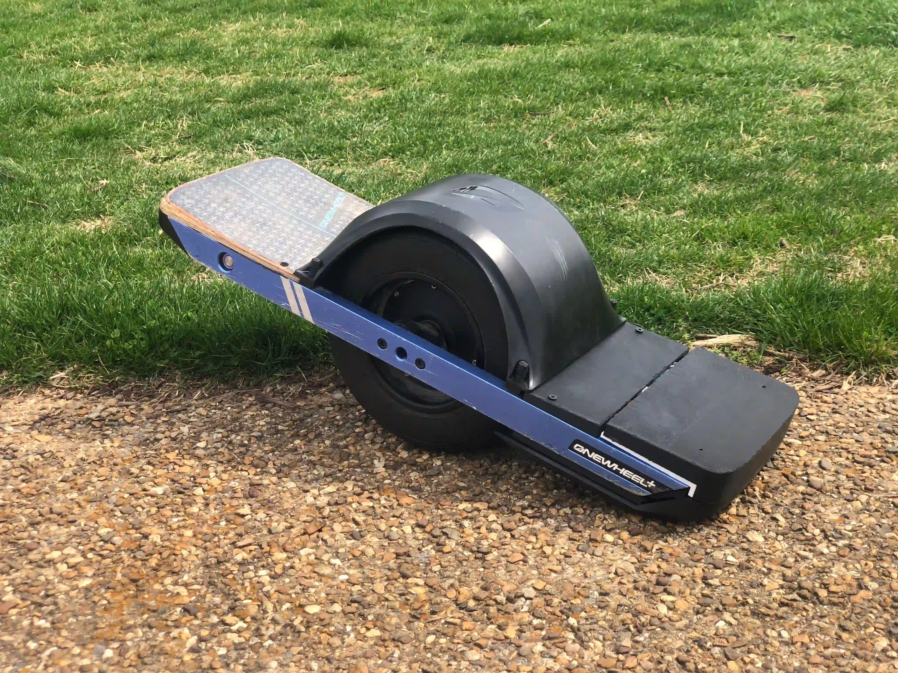
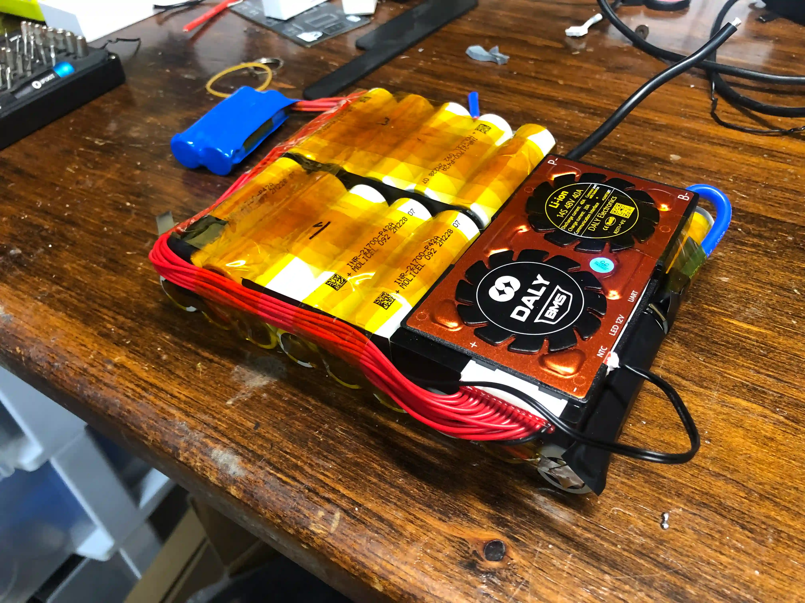

Onewheel mods and upgrades
This project began with my purchase of a partially working Onewheel plus. I was looking for a battery project with the purchase of this board so was not upset to find thats its BMS was not working. My first goal was to build a battery that could replace the original battery with upgraded range and equal or more power.
V1
My first battery, lets call this v1, was a 14s3p INR21700M50LT pack. I had no expierence building onewheel batteries at this time and wasfairly disconnected with the aftermarket community. To summarize this battery was a disaster waiting to happen. In order to fit this many cells in the frame I had to put the BMS on top of the battery box, in the footpad. The first thing to fail on this build was the welds. I used a cheap battery spot welder and had no prior expierence building batteries so my connections were weak.
Since I used a smart BMS on this build I first noticed a cell dropping in voltage much faster than the rest. Once disecting this battery I found several loose welds likely to have caused the cell's voltage drops.
V2
After a bit more research I started planning my next battery build. This was a 14s2p pack using Molicel P42B's. For the BMS I used a Daly 14s smart bms. I had also upgraded to a Glitter 801D spot welder for much stronger welds. I used 0.2mm nickel strips for all welds. The first falure of this build was a cell going out of balance. Since it was cell 14, the last in the string I simply replaced that cell. I also swapped my bms to a JBD 12-17s smart BMS for better active balance.
The main flaws on this build can be seen in the above picture.
- Easily the biggest mistake was not using any fish paper.
- Weak physical build.
- Poor routing of balance lines.
Since I was still new to battery building I was not aware of teh importance of fish paper. I placed the cells tight to each other, using only the welds to bind them until I taped them all together. While this seemed to work it was difficult to assemble and not prepared for the vigorous vibrations of onewheeling. One of my theories of the cause of v2's second bad cell and ultimate falure was the lack of fish paper. Several cells showed signs of corrosion, and a few had parts where the nickel strips had worn through the battery heat shrink making contact with the metal of the cell.
Although never proving to cause any problems, the balance wires were routed in such a way that they over lapped each other many times. In a tight build like a onewheel this could cause a short over time with many vibrations.
Vesc
The next upgrade to my board was replacing the original onewheel plus controller with a Little Focer 3.1 Vesc compatible ESC. The Focer came in a kit and was fairly strait forward to install. I 3d printed a box using high speed TPU. I decied on HS-TPU since it wouldn't crack under heavy and constant vibrations. There were a few aspects of this conversion I was not satisfied with at the end. The main was the main connector from the battery box to the controller box. It is a 16-pin plug that carries battery current (charge and discharge) and rear LED signal and power. The connector fits loosly and has a easily breakable clip to hold it in place that left me feeling a bit un comfortable. Similarly the motor cable was an almost identical 6 pin connector that I had the same feelings for. The other part I did not love about this design was the TPU box while it never did crack it was too flexible and felt like it never created a reliable water seal around the connectors.

V3 and Vesc-Rebuild
After I graduated School I embarked on yet another board renevation, and the biggest yet. The main goal was to upgrade to an 18s2p pack from my 14s2p pack that was having yet another out of balance cell. This time I was determined to do everything right and not have any more battery issues. On this rebuild I:
- Rebuilt my 14s2p pack of Molicel P42Bs into a 18s2p pack using 16 original cells. I capacity tested all 28 original cells and selected the best 16 to use on the new pack. All of the reused cells tested over 3700mAh. I paired each used cell with a new P42B for a parallel group and had two fully new parallel groups (cell 1 and 18). I used fishpaper tabs on the positive end of every cell and 70mm paper between every cells that touched the next cell in series. One of my favorite new additions to this pack was the use of custom cut nickel from theboardgarage. See my pictures below of my welds and how I built this pack.
- Upgraded motor cable and plug to a superflux connector from Fungineers. This involved taking the rotor and stator apart from each other and de-soldering the old cable from the hall sensor and phase wires, then inserting the new wire and resoldering the connections. This is all much easier said then done. There was some adhesive sealant in the axle sealing around the connector I had to cut out and reseal that because quite the ordeal. The result was very worthwhile as it replaced a loose 6 pin connector and a separate hall sensor connector, with a screw on sturdy build 3+7 pin connector. (3 heavy pins for phase and 7 data pins for hall etc).
- The last part of this rebuild was the CNC'd XR Pub box that I was lucky enough to get my hands on for about $140. (There was a group buy going on the the vescify discord and a close friend of mine signed me up to get one!) This box came with all new connectors (except the superflux which I bought from fungineers). One of the big advantages of this box was that it is aluminium so the esc can mount to the bottom instead of the lid like before and use the entire box as a heat sink.
There are a few other smaller aspects, lights, fender and footpads that I updgraded on this version. The lights I still as of 10/9/25 have not fully got working. The partial fenders that I had 3d printed broke and I will likely just buy the drop top from TFL. My foot pads I printed with HS-TPU and used trail grip tape from TFL.
At this point I have an original future motion motor and rails. Everything else is aftermarket. A few resources I used for this build are:
- The Vescify discord is an extremly helpful place for all things custom onewheel. I highly reccomend joining it if you plan to do anything your self.
- Theboardgarage There are several very helpful posts on this site showing battery builds and helpful information for when building.
{kind=link}